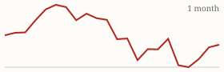

| Today's briefing for operators |
Top line: The wholesale middleman is getting squeezed |
|
| Thursday, October 29, 2026 | Late Edition | Curated from 63 voices on X |
|
Real Estate
From 10 Wholesale Deals a Month to One All Year
Jacob Naviaux says the middleman has been squeezed hard for four years in many U.S. markets.
By @Jacob_Naviaux |
Jacob Naviaux says his wholesale business averaged 10 deals a month and about $200,000 in gross revenue before 2023. So far in 2026 it has closed one wholesale deal. He says the middleman has been squeezed hard across many markets, and anyone still running a successful wholesale operation, especially in the Sun Belt, is "next level good." |
The CEO takeaway: when the spread on assignments shrinks, the operators who last are the ones with more than one exit. Novations, flips, rentals and creative terms give you something to do with a lead that no longer works as a straight assignment, so know your numbers by exit type. |
|
| Read on X |
|
Mortgage Rates & Markets | Mortgage Rates Today's average lender rates | 30-year fixed | 7.35% | +0.02 | | 15-year fixed | 7.00% | -0.01 |
Daily change vs. prior day. Source: Mortgage News Daily, as of 10/28/2026 (updated weekdays about 4 PM ET). |
|
S&P 500 Close of Wed, Oct 28 S&P 500 7,743.98 ▲ +21.38 (+0.28%) Yahoo Finance chart data (daily closes) |
|
Nasdaq Composite Close of Wed, Oct 28 Nasdaq Composite 26,549.85 ▲ +72.04 (+0.27%)  Yahoo Finance chart data (daily closes) |
|
| Real Estate & Deals | Chart of home builder share of U.S. listings. Image via @nickgerli1 on X Builders' Share of Listings Falls to 25% By @nickgerli1 Nick Gerli says new-build homes are now 25.2% of all homes for sale (476,000 of 1.88 million), down from 34% at the pandemic peak, as resale inventory climbs. He expects builders to drift toward their long-run share of about 15%, meaning more resale competition for every seller. Read on X |
5 of 12 Tenants Ended in Eviction By @Jacob_Naviaux Jacob Naviaux says 5 of the 12 tenants his property managers placed ended up in eviction, so he took management in-house and found it less complicated than expected. A reminder to check the outcomes of any vendor you hand a core job to. Read on X |
Industrial Beats Multifamily By @ChrisRamsey60 Chris Ramsey, who has scaled both, says industrial is not even comparable to multifamily in how much better it is. Worth a look if you're weighing where to park profits long term. Read on X |
| AI Briefing | Gemini 4 Carbon announcement graphic. Image via @GoogleDeepMind on X Google Launches Gemini 4 Carbon By @GoogleDeepMind Google DeepMind calls Gemini 4 Carbon its next frontier model, state of the art in cybersecurity and long, multi-step tasks. It goes first to a small group of trusted cyber defenders, with wider access to follow. Read on X |
OpenAI API credits announcement. Image via @OpenAIDevs on X ChatGPT Plans Now Include API Credits By @OpenAIDevs Eligible ChatGPT Pro and Business subscribers can now claim up to $500 a month in API credits to build apps and agents. If your team is on Business, that's free budget for automating lead follow-up or reporting. Read on X |
Claude for Legal Adds Ready-Made Tools By @claudeai Anthropic's Claude for Legal now has a gallery of ready-made tools for contract review, cite checks and regulatory scans that you can load with your own documents and share across the business. Read on X |
Mistral Opens an API for Agents By @MistralAI Mistral's new Responses API, in public preview, returns the model's answer, its reasoning and its tool calls as separate pieces, making it easier to build agents on Mistral. Read on X |
What an AI-Native Company Looks Like By @mattshumer_ Matt Shumer says every company claims to be AI-native but he has seen only one, Spawn, and tells founders to read how it reorganized around AI. Useful benchmark for how far your own team has gone. Read on X |
| Business & Leadership | Manager or Messenger? By @LeilaHormozi Leila Hormozi says a manager has one job: increase the team's output. Ask three questions about each one: do they find better ways to work, do they clear obstacles, and do they help the team move faster? If all three are no, you have a messenger, not a manager. Read on X |
Get Addicted to Execution By @danmartell Dan Martell's one-liner: get addicted to execution, not information. Another course or podcast won't close a deal; shipping the next step will. Read on X |
Who Owns the Machines Matters By @PeterDiamandis Peter Diamandis argues that if wages become a less reliable driver of growth because of AI, ownership matters far more. For a business owner, that means owning assets and systems, not just earning income. Read on X |
|
The Hyre Times is compiled each morning by Groky from public posts on X plus public rate and market data. Summaries reflect the authors' own claims and have not been independently verified. Not financial advice. © 2026 Hyre Times. |
|